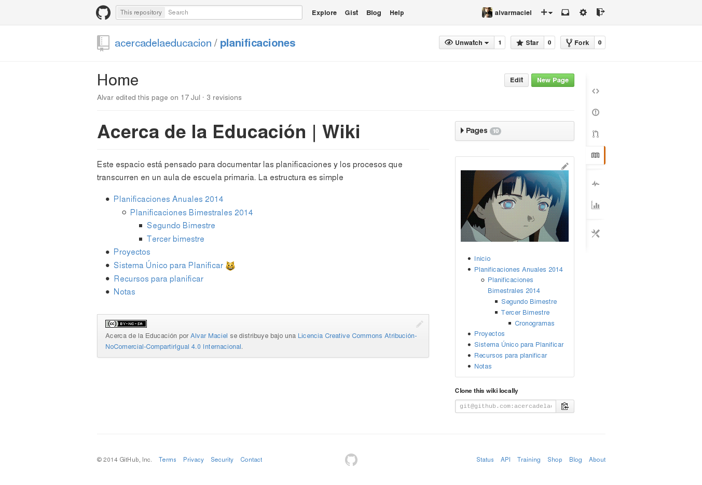

Github para docentes
Alvar Maciel
alvarmaciel@gmail.com
Table of Contents
- Herramientas
- Mundo de la tecnología
- Mundo de la educación
- Qué es Github (no… para que lo uso)
- Repositorio Público
- Colaboración y control de versiones
- Publicaciones web rápidas con gh-pages o Jekyll
- Flujo de trabajo usando github
- Planificaciones y blogs
- Visión de conjunto
- Unas palabras sobre las dificultades
- Comunidades de aprendizajes
- Aprendamos juntos
- Gracias
- Créditos
Herramientas
Mundo de la tecnología

Mundo de la educación
- Establecen un plan de acción
- Tentativo y modificable
- Documenta un recorrido
- ¿Personal o Público?
Qué es Github (no… para que lo uso)
Repositorio Público

- Los textos por defectos están para que los copiemos
Colaboración y control de versiones

Publicaciones web rápidas con gh-pages o Jekyll


Flujo de trabajo usando github

- Escribo o copio (forkeo) una planificación.
- Si es un trabajo en conjunto, envío mis modificaciones (hago un pull request).
- Llevo la clase adelante.
- Vuelvo a modificar o escribir.
- Si uso Gitbook, lo que modifico se modifica en el libro.
Planificaciones y blogs


Visión de conjunto
Unas palabras sobre las dificultades

Comunidades de aprendizajes
- Clave para poder salir del aislamiento del aula
Aprendamos juntos
Gracias
- Alvar Maciel
- {Github para docentes}
- Twitter: @amaciel
- Diapos: En el blog
- Recetario, arena de juego para aprender Github y Makdown